Durar
Hacemos cosas que no haya que reponer. Si algo no aguanta el campo, no sale.
Manual de marca
Todo lo que hace falta para que cualquier pieza, sea un posteo, un cartel o una lista de precios, se vea siempre como Recuvarilla.
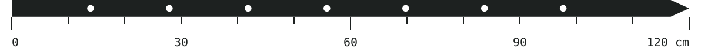
No hace falta leerlo entero. Buscá lo que tenés que hacer en la tabla y andá directo a esa página.
Los archivos de logo, colores, fuentes y recursos gráficos están en la carpeta brand/assets. Cada página te dice qué archivo usar.
| Tengo que… | Mirá | Archivo |
|---|---|---|
| Poner el logo en algo | Logo · versiones | assets/logo |
| Saber qué color usar | Color | assets/colors/paleta.txt |
| Instalar las fuentes | Tipografía | assets/fonts/instalar |
| Hacer que una pieza "parezca Recuvarilla" | Sistema visual | assets/sistema |
| Explicar qué es Recuvarilla | Esencia | — |
| Chequear si algo está mal | Usos incorrectos · Sí/No | — |
Recuvarilla fabrica en Luján varillas para alambrado de plástico recuperado. Miden 3 × 3 × 120 cm, se venden lisas o perforadas a pedido y se usan en alambrados, cercos eléctricos, divisiones y reparaciones.
La varilla de madera se pudre en la base, se astilla y hay que reponerla. La de hierro se oxida y conduce. Cada reposición es plata, material y un día de trabajo en el campo.
Una varilla que no se pudre ni se oxida, que viene perforada de fábrica a la medida de cada alambrado y que está hecha con plástico recuperado en la provincia.
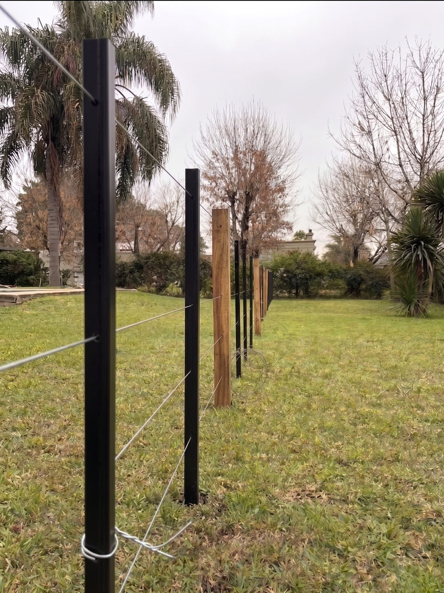
Que lo que se tira termine sosteniendo el campo.
Fabricar en Luján varillas de plástico recuperado que duren más que las de madera, perforarlas a la medida de cada alambrado y hacerlas llegar a cada campo.
Que en la región pampeana la varilla reciclada sea la opción de todos los días, no la alternativa.
Hacemos cosas que no haya que reponer. Si algo no aguanta el campo, no sale.
Medidas, precios y plazos claros. Sin promesas que no podamos medir.
Si un material todavía puede servir, no se tira: se transforma.
Cortamos, perforamos y adaptamos. El alambrado de cada campo es distinto.
Para el que alambra en el campo, Recuvarilla es la varilla que no hay que reponer: resistente, perforada a medida y hecha en Luján con plástico recuperado.
Hecha para el campo.
Pensada para durar.
Decide y paga. Quiere no volver a reponer varillas y saber cuánto le sale el alambrado completo.
Instala. Valora que llegue perforada a la medida y que no se astille ni se parta al trabajarla.
Revende. Necesita un producto que se explique solo y material para mostrarlo.
Cercos, divisiones y arreglos. Quiere algo prolijo que dure sin mantenimiento.
| Diferencial | Recuvarilla | Madera | Hierro |
|---|---|---|---|
| Humedad | No se pudre | Se pudre en la base | Se oxida |
| Cerco eléctrico | Plástico: no conduce | Según humedad | Conduce, lleva aisladores |
| Perforado | De fábrica, a medida | A mano, en el campo | Según modelo |
| Origen | Plástico recuperado, Luján | Árbol talado | Industrial |
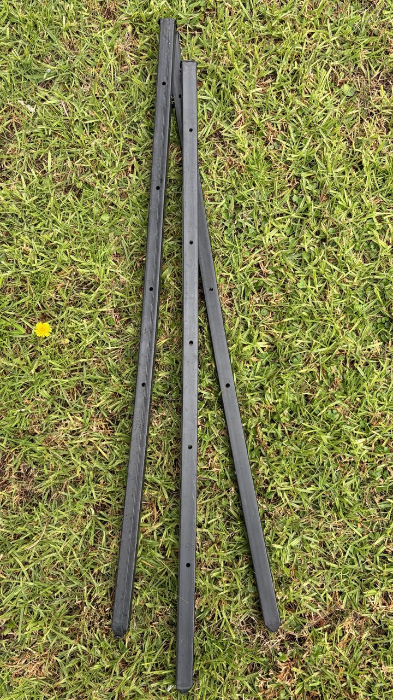
La I de RECUVARILLA es una varilla de verdad: sección cuadrada, tres perforaciones y la punta clavada debajo de la línea. No se redibuja, no se reemplaza por una I común y no se separa del nombre.
Palabra. Archivo condensada ExtraBold, vectorizada: no depende de tener la fuente.
Perforaciones. Las mismas del servicio de agujereado. Dejan ver el fondo.
Punta clavada. La varilla baja de la línea, como en el campo.
Bajada. "100% ARGENTINA" entre dos franjas celestes.
Recuvarilla
Una palabra, con R mayúscula. Sin guion, sin plural.
Recu-Varilla · RecuVarilla · Recuvarillas
Las mayúsculas sostenidas (RECUVARILLA) solo en el logo.
La que va por defecto: folletos, carteles, web, firma.
recuvarilla-principal-*.svg
Cuando el espacio es bajo y ancho: barra de la web, pie de página, remito, ERP.
recuvarilla-palabra-*.svg
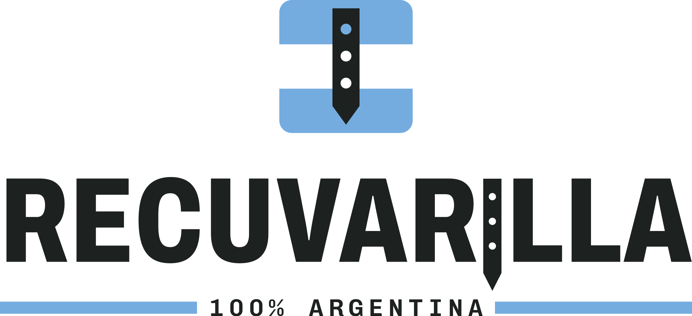
Espacios cuadrados o altos: remeras, stand, stickers, portadas.
recuvarilla-vertical-*.svg
Solo cuando el nombre ya está cerca o no entra: avatar de WhatsApp e Instagram, favicon, sello.
recuvarilla-isotipo-*.svg
Cada versión viene en color, negativo (para fondos oscuros), negro y blanco (una sola tinta: sellos, grabados, fotocopias). También hay PNG en assets/logo/png para quien no pueda abrir un SVG.
Blanco · color. La combinación principal.
Hormigón · color.
Grafito · negativo.
Celeste · negro (las franjas pasan a negro).
Foto clara · color, sobre una zona lisa de la foto.
Foto oscura · negativo, con la foto oscurecida al 55%.
Alrededor del logo no puede haber nada, ni texto, ni bordes, ni otras imágenes, en una distancia igual a la altura de la R (la marcamos como R). Cuanto más aire, mejor.
En el isotipo, el aire es 1/4 de su lado. En el avatar de WhatsApp o Instagram el círculo ya lo recorta: usá el PNG de 1024 tal cual, sin achicarlo ni agregarle bordes.
Principal
35 mm · 140 px
Palabra
25 mm · 100 px
Isotipo color
5 mm · 16 px
Isotipo 1 tinta
10 mm · 32 px
Debajo de esos tamaños la bajada o las perforaciones dejan de leerse. Si no entra, usá la versión más simple.
Estirar o aplastar. Siempre escalá con Shift.
Cambiar los colores. Ni verde, ni dorado, ni "para que combine".
Sombras, brillos o relieves. El logo es plano.
Rotarlo o inclinarlo. Siempre horizontal.
Escribirlo con una I común. Usá siempre el archivo.
Escribirlo con otra letra.
Ponerlo sobre una foto cargada. Buscá una zona lisa u oscurecé la foto.
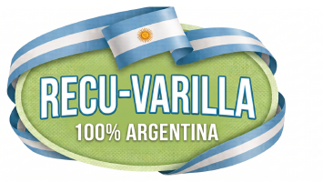
Usar el logo anterior. El óvalo con cinta queda retirado.
CMYK: antes de una tirada grande, pedí una prueba impresa. Texto chico impreso: 100% negro (K) en vez del CMYK del grafito. Todos los valores en assets/colors/paleta.txt.
El blanco da aire, el grafito es la varilla y el celeste es la bandera: aparece poco y por eso se nota. No hay verde de marca. El verde "de campo" es el cliché que queremos evitar, y el campo ya aparece en las fotos.
Texto sobre fondo: estas combinaciones se leen bienLas dos son de Omnibus-Type, una fundidora de Buenos Aires, y son gratis para cualquier uso (licencia OFL). Instalá los 5 archivos de assets/fonts/instalar: doble clic y "Instalar". En Canva Pro se suben como fuentes de marca.
Aa
ABCDEFGHIJKLMNÑOPQRSTUVWXYZ 0123456789
Titulares, carteles, precios grandes. Alta y compacta, como la palabra del logo: entra mucho texto en poco ancho.
Aa
Aa Bb Cc Ññ 0123456789 Aa Bb Ññ
Todo lo que se lee: descripciones, folletos, web. Bold para destacar dentro del texto y para botones.
120
$ 2.950 · 3 × 3 cm
Medidas, precios en tablas, teléfonos, códigos. Todos los números ocupan lo mismo y las columnas quedan alineadas.
Si una herramienta no deja instalar fuentes: títulos en Arial Narrow Bold, textos en Arial. Es un reemplazo de emergencia, no la regla.
Hecha para el campo.
Perforada a la medida de tu alambrado
Indicá la distancia entre hilos y los metros de alambrado. Te armamos el pedido con el flete hasta tu localidad.
3 × 3 × 120 cm · $ 2.950
Pedí tu presupuesto por WhatsApp
| Pieza | H1 | H2 | Texto | Números |
|---|---|---|---|---|
| Instagram 1080 × 1080 | 96 px | 48 px | 32 px | 40 px |
| Historia 1080 × 1920 | 120 px | 56 px | 36 px | 48 px |
| Folleto A5 | 36 pt | 16 pt | 10 pt | 12 pt |
| Cartel A3 | 96 pt | 36 pt | 18 pt | 28 pt |
| Lista de precios A4 | 28 pt | 14 pt | 10 pt | 11 pt |
| Web (celular / compu) | 48 / 88 px | 24 / 32 px | 16 / 18 px | 16 px |
| Presentación 16:9 | 60 pt | 28 pt | 18 pt | 24 pt |
WhatsApp no tiene fuentes: los títulos van en *negrita*, las medidas y los precios en ```monoespaciado```, y nada de mayúsculas sostenidas.
Estos cinco recursos hacen que una pieza parezca Recuvarilla aunque se tape el logo. Todos salen de la varilla o del alambrado. Los archivos están en assets/sistema.
Separa bloques: el pie de un cartel, la base de un posteo. Siempre horizontal, con la punta hacia la derecha.
La perforación reemplaza al punto de las listas. Nunca uses emojis ni tildes de colores.
Pattern para fondos y bordes. Una sola vez por pieza y nunca detrás de un texto.
La varilla como medida. Para fichas, medidas y el gráfico de dimensiones.
La bandera, como en el isotipo. Marca de origen en bordes y cierres, no como fondo.
| Cómo se combinan | Separador | Viñeta | Alambrado | Regla | Franja |
|---|---|---|---|---|---|
| Posteo, historia | Siempre | Si hay lista | Elegí uno de los tres según el tema | ||
| Ficha de producto, catálogo | Siempre | Siempre | — | Sí | — |
| Cartel, stand | Siempre | Si hay lista | Sí (marco) | Opcional | — |
| Etiqueta, fajín, sticker | — | — | — | — | Sí |
Dos varillas a los costados y tres hilos cruzando: la pieza queda "dentro" del alambrado. Sirve para portadas, carteles del stand y placas destacadas.
Agujereada a la medida de tu alambrado.
Margen de 1/12 del lado más corto en todas las piezas. Adentro, 12 columnas. El logo va arriba a la izquierda y los contactos abajo, siempre separados por la varilla.
Titular hasta 8 columnas
WhatsApp · IG · QR
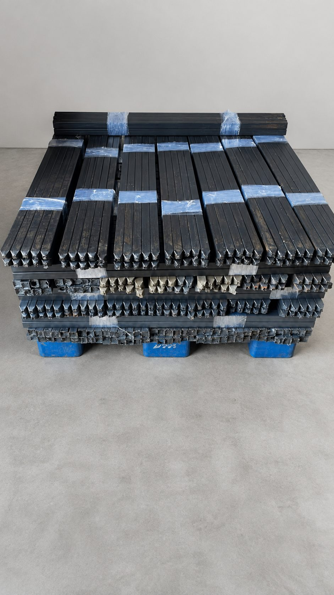
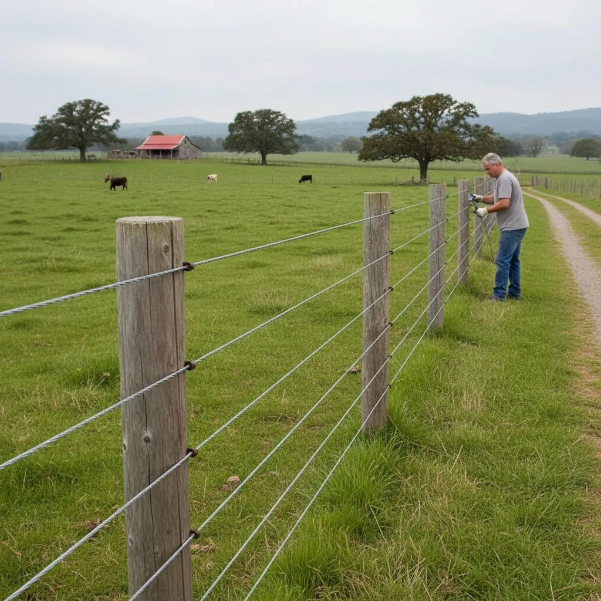
La varilla es negra, mate y recta. La foto tiene que mostrar eso sin maquillarlo.
Fondo neutro. Se ve la cantidad, el color y la punta.
Desde arriba, en el pasto. Se ven las perforaciones.
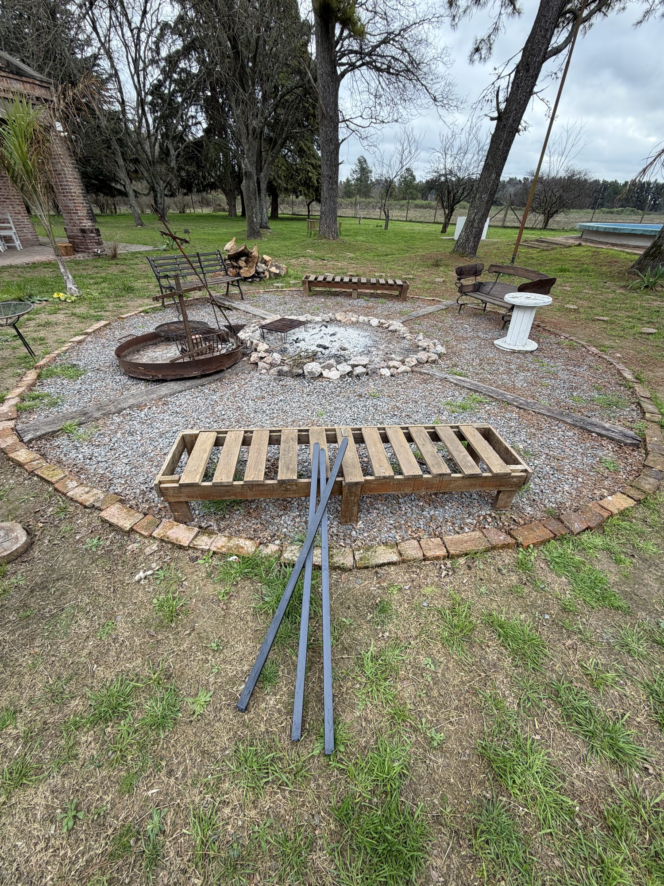
El fogón se lleva la foto. La varilla queda tirada y chica.
Esta es la foto modelo: la varilla adelante y nítida, el alambrado que sigue hasta el fondo, luz de día, y un poste de madera en el medio que cuenta la comparación sin decir nada.
En los tres, la varilla más cercana queda nítida, en el tercio izquierdo o derecho, y se ve dónde entra en la tierra.
Edición permitidaHoy hay fotos buenas del producto y una sola del uso. Estas doce cubren todo lo que pide el manual: redes, catálogo, stand y web. Con un celular alcanza si se respeta la luz y el encuadre.
Tachá cada una cuando la tengas. Guardalas en assets/fotos con el número adelante: 05-alambrador.jpg.
| # | Foto | Cómo | Para |
|---|---|---|---|
| 01 | El corte 3 × 3 | La punta de la varilla de frente, fondo hormigón | Fichas, ícono |
| 02 | La punta | Primer plano en diagonal, luz lateral | Redes, web |
| 03 | Alambre por la perforación | Macro, el hilo pasando | Agujereado |
| 04 | Mano con varilla | Una mano sosteniéndola, para la escala | Catálogo |
| 05 | Alambrador instalando | Manos y herramienta, sin pose | Redes, stand |
| 06 | Cerco eléctrico | Varilla con los hilos del eléctrico | Aplicaciones |
| 07 | Hacienda detrás | Vacas en segundo plano, alambrado adelante | Web, folleto |
| 08 | Alambrado largo | Plano general, luz de la tarde | Portadas |
| 09 | Antes y después | La misma esquina con madera vieja y con varilla | Pruebas |
| 10 | La carga | Pallets subiendo a la camioneta o camión | Entregas |
| 11 | La fábrica | Tolva, molde y perforado, en Luján | Proceso |
| 12 | El material | Botellas y tapitas antes de molerlas | Educación |
Hecha para el campo. Pensada para durar.
Soluciones sustentables de alto rendimiento para aplicaciones agroindustriales.
Medidas, precios y plazos con números. "3 × 3 × 120 cm" antes que "gran tamaño".
Hablamos como en el campo: alambrado, hilos, potrero, tranquera. Sin disfrazarnos de gauchos.
Un dato vale más que un adjetivo. Si no lo podemos medir, no lo prometemos.
De vos, en rioplatense, como quien atiende el teléfono en Luján.
varilla · alambrado · hilos · perforada · agujereada · potrero · campo · no se pudre · no se oxida · dura · plástico recuperado · hecha en Luján · flete · presupuesto
soluciones · alto rendimiento · agroindustrial · eco-friendly · innovador · disruptivo · premium · "madera plástica" · "para toda la vida" · "100% garantizado"
La negra es la que queda.
No se pudre. No se oxida.
Perforada a la medida de tu alambrado.
Plástico que ya existía, trabajando en tu campo.
Respuesta corta, con el precio y la próxima pregunta. Nada de audios largos.
Hola, precio de las varillas?
¡Hola! La lisa está $ 2.950 + IVA y la agujereada $ 3.450 + IVA, de 1 a 99 unidades. Por cantidad baja.
¿Cuántos metros de alambrado son y en qué localidad? Así te paso el presupuesto con el flete.
Precios de la lista vigente desde el 01/08/2026. Siempre sacalos de la lista del día, no de este manual.
La foto cuenta; el texto agrega un dato y una acción. Tres o cuatro hashtags, al final.
recuvarilla
Hay una varilla de madera entre las nuestras. Adiviná cuál hay que cambiar primero.
3 × 3 × 120 cm, plástico recuperado, perforada a la medida de tu alambrado. Presupuesto por WhatsApp: link en el perfil.
#alambrado #campo #hechoenlujan
Presupuestos, distribuidores, mails. De vos por defecto; de usted solo si el cliente lo usa primero.
Asunto: Presupuesto · 1.200 varillas agujereadas
Hola, Martín:
Te paso el presupuesto por 1.200 varillas agujereadas de 3 × 3 × 120 cm, a precio de lista mayorista. El flete a Mercedes lo cotiza el expreso y te lo confirmo antes de cerrar.
El presupuesto se sostiene 7 días.
Saludos,
Recuvarilla · Luján
Polipropileno recuperado de botellas y envases, fundido y moldeado en Luján.
CaracterísticasLos hilos pasan a la altura justa de tu alambrado.
Perforamos en fábrica según el tipo de alambrado: cuántos hilos y a qué altura. Se pide al presupuestar y se coordina por WhatsApp.
También vendemos alambre galvanizado 17/15, en rollos de 1.000 m.
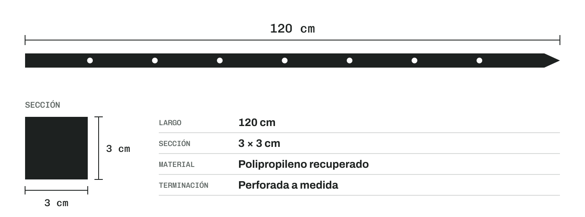
Cuatro archivos en assets/producto: lisa y perforada, cada una en positivo y negativo. Las letras están vectorizadas: se ven igual en cualquier computadora.
Usalo tal cual en fichas, catálogos, la web y el stand. Si solo necesitás la varilla con la medida, usá la regla de 120 cm del sistema visual.
Nunca lo estires. La varilla está dibujada en su proporción real: 3 de ancho por 120 de largo.
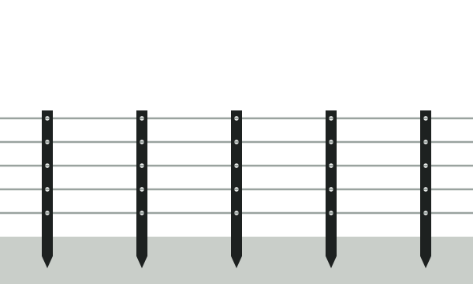
Perimetrales y de potrero. Agujereada a la altura de cada hilo.
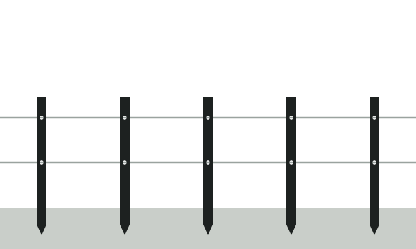
El plástico no conduce la corriente: el hilo pasa directo por la varilla.
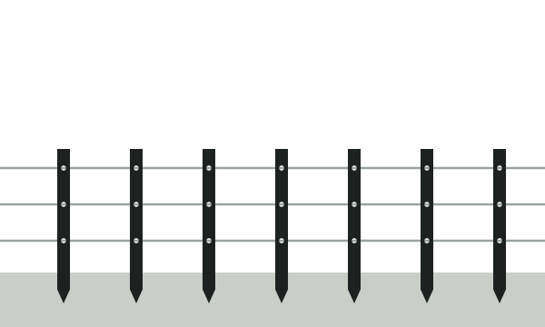
Parcelas, huertas y jardines. Varillas más juntas y menos hilos.
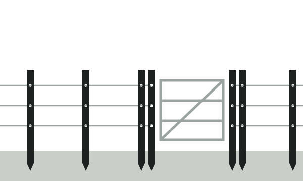
Los tramos de un cerco con tranquera. La tranquera va en sus postes; la varilla, en los tramos.
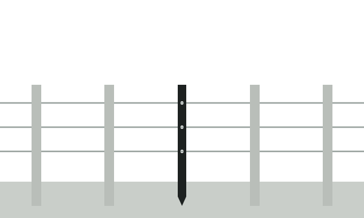
Reemplazá la varilla rota sin rehacer el alambrado. Pedila agujereada a la misma altura.
"Cambiamos varios kilómetros de alambrado, todo excelente."
Juan Cordone · Provincia de Buenos Aires · reseña en Google. Las reseñas se usan tal cual, con el nombre como figura en Google.
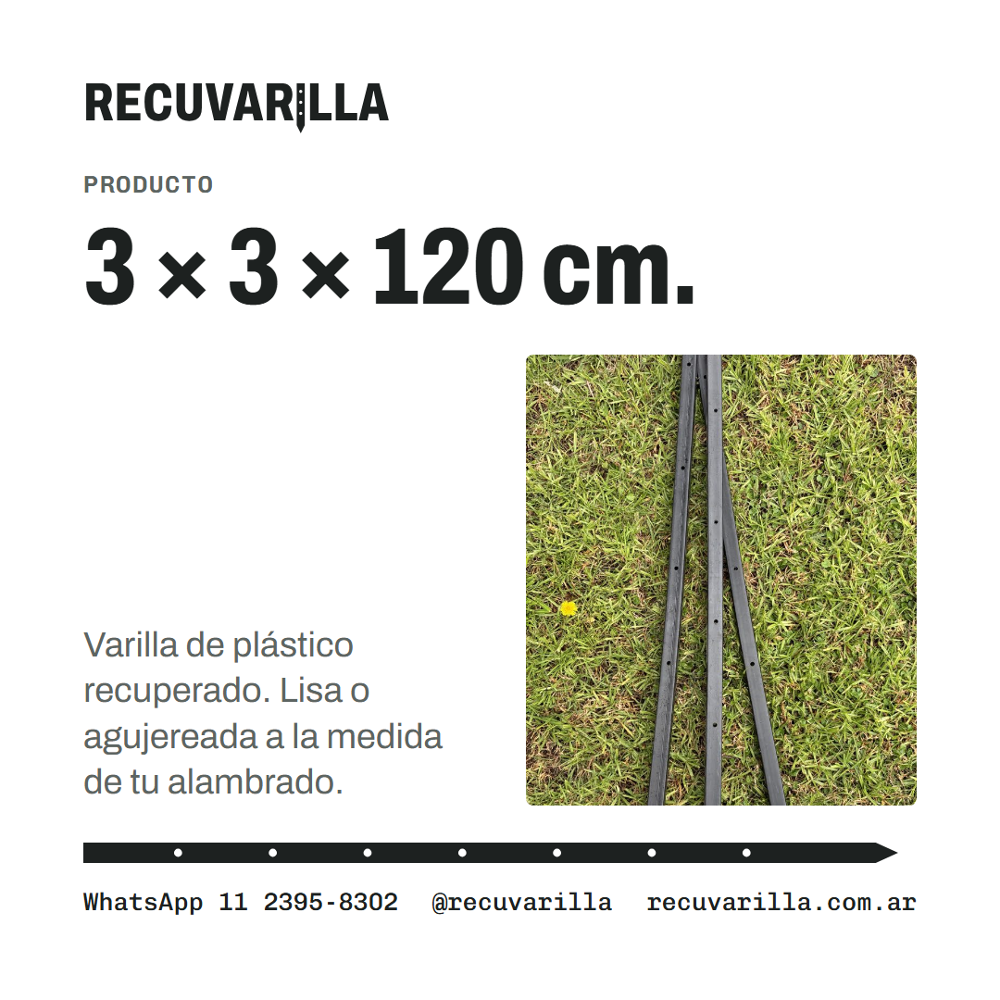
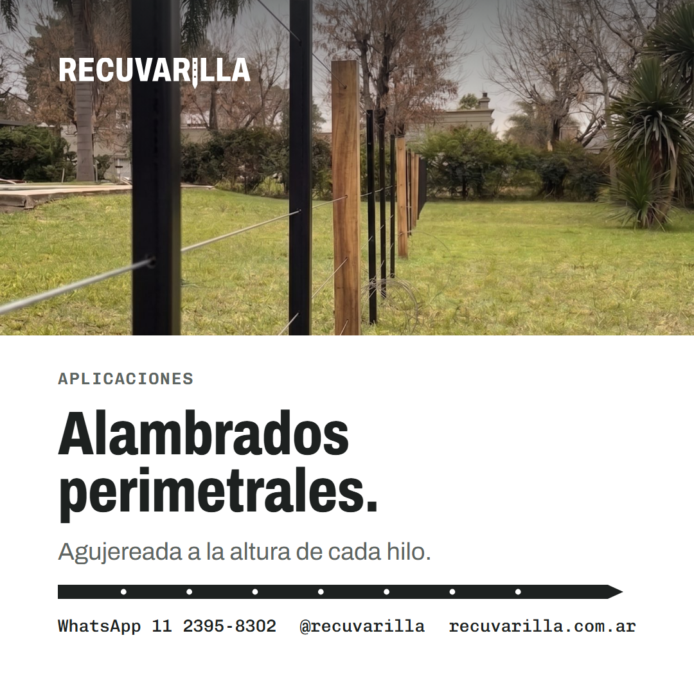
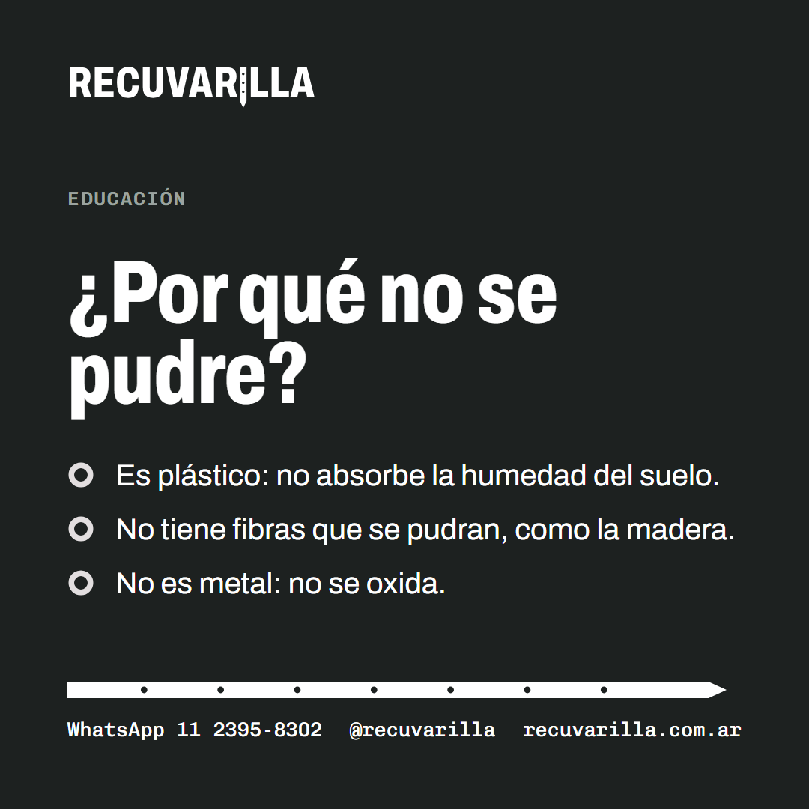
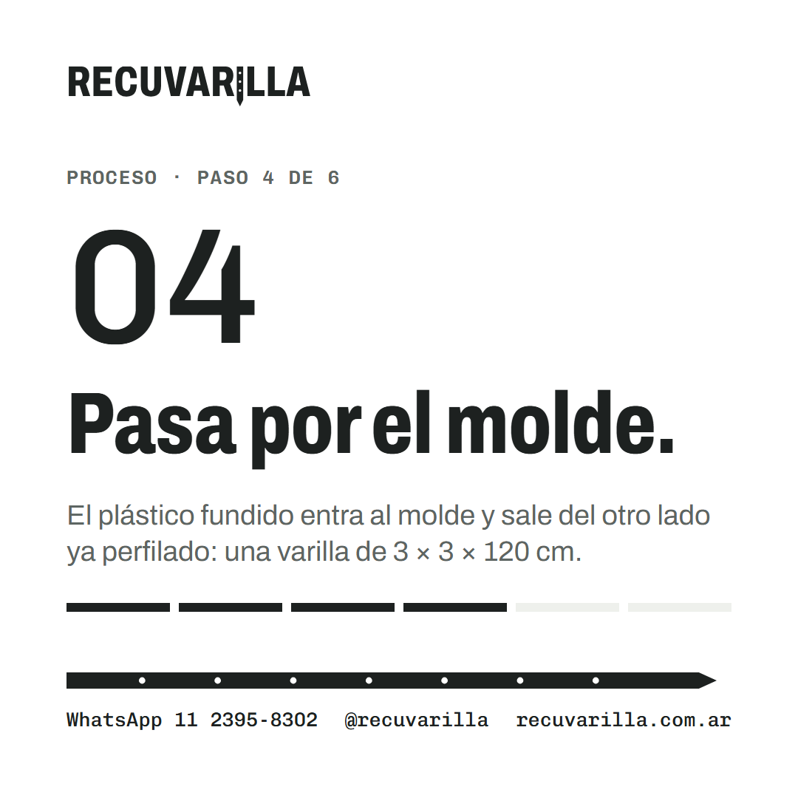
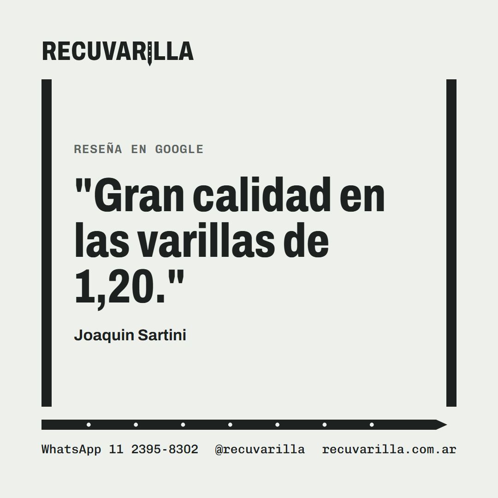
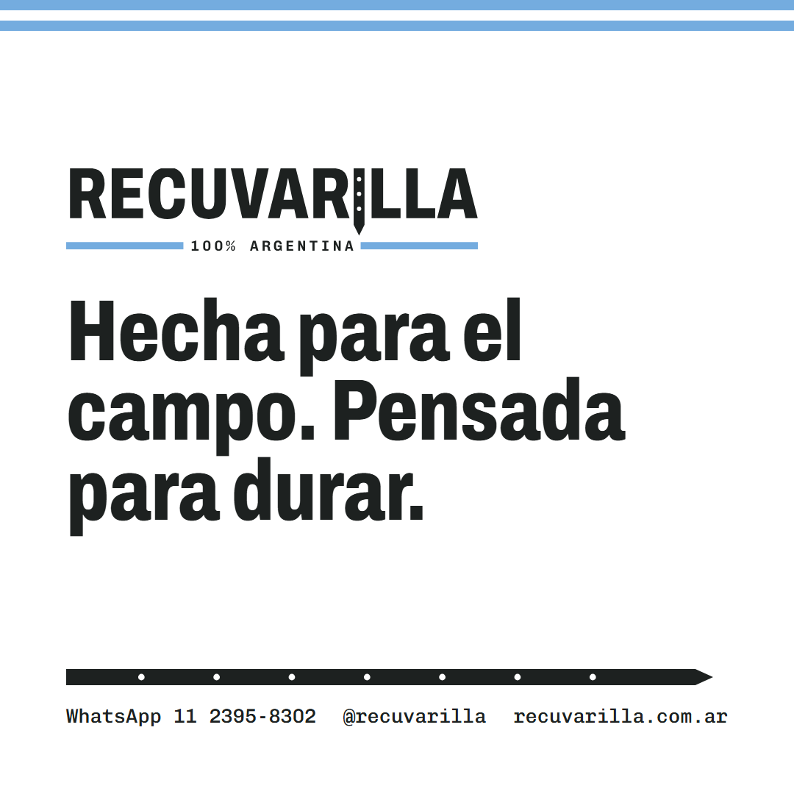
Los seis tipos de posteo, en cuadrado y en historia, están en assets/templates. El feed alterna fondos blancos, fotos y un posteo oscuro cada tanto.
Es por donde entra casi todo el negocio. El perfil tiene que estar completo y el presupuesto tiene que salir en una sola imagen prolija.
| Descripción | Varillas de plástico recuperado para alambrados. 3 × 3 × 120 cm, lisas o agujereadas a medida. Hechas en Luján. |
| Horario | Lunes a sábado de 8 a 18 |
| Dirección | Luján, Buenos Aires |
| Catálogo | Varilla lisa · Varilla agujereada · Alambre 17/15 |
| Foto de perfil | Isotipo, PNG de 1024 (recuvarilla-isotipo-color-1024.png) |
Para: Martín Aguirre · Luján · 28/09/2026
| Detalle | Cant. | Unitario | Subtotal |
|---|---|---|---|
| Varilla agujereada 3 × 3 × 120 | 150 | $ 3.400 | $ 510.000 |
| Total sin IVA | $ 510.000 |
Precios sin IVA. Válido 7 días. Flete aparte, lo cotiza el expreso.
Imagen de presupuesto, 1080 × 1350. Precio de lista para 100 a 499 unidades agujereadas.
Varillas de plástico recuperado, hechas en Luján.
No se pudren, no se oxidan y vienen agujereadas a la medida de tu alambrado.
Varillas de plástico recuperado, hechas en Luján.
No se pudren, no se oxidan y vienen agujereadas a medida.
Calcular mi presupuestoHero blanco. En el sitio, la varilla 3D ocupa el lugar de las varillas dibujadas: negra sobre blanco, el mayor contraste posible.
Un botón principal en grafito, del negro de la varilla. El segundo va con contorno. Nunca dos botones iguales.
La franja cierra el hero y separa el mundo de la marca del contenido. Aparece una sola vez.
Varilla 3 × 3 × 120 cm
Plástico recuperado. Precio por unidad, sin IVA.
| Cantidad | Lisa | Agujereada |
|---|---|---|
| 1 a 99 | $ 2.950 | $ 3.450 |
| 100 a 499 | $ 2.900 | $ 3.400 |
| 500 a 999 | $ 2.850 | $ 3.350 |
| 1.000 a 4.999 | $ 2.750 | $ 3.250 |
| 5.000 o más | $ 2.550 | $ 2.800 |
A4 vertical. Es la pieza que más se imprime y se reenvía por WhatsApp como foto: tiene que leerse en un celular.
Los precios de esta muestra son los de la lista vigente desde el 01/08/2026. Cuando cambien, se cambian en la hoja; el diseño queda.
85 × 55 mm, cartulina mate. Frente blanco con el logo; dorso grafito con todo lo necesario para escribirnos.
Frente y dorso a escala 2:1 de pantalla. Si alguien necesita tarjeta propia, el nombre va en el dorso, arriba, en Archivo Bold.
Texto real, no una imagen: se lee aunque el mail bloquee imágenes. Solo el logo es imagen (PNG de la palabra, 200 px de ancho).
Saludos,
Martín Aguirre
Ventas
WhatsApp 11 2395-8302 · recuvarilla.com.ar
Luján, Buenos Aires
En la firma se usa Arial: las fuentes de marca no viajan por mail. Sin frases, sin banners, sin redes en íconos.
Hecha para el campo. Pensada para durar.
Varillas de plástico recuperado para alambrados, 3 × 3 × 120 cm.
La varilla
A5, frente y dorso. El frente vende con una frase y una foto real. El dorso explica: medida, beneficios y cómo pedir.
Varillas de plástico recuperado.
Se lee a 30 m: una frase, la medida, el teléfono grande. El marco alambrado es el único recurso. En lona, el QR va de 20 cm como mínimo.
Remera grafito o negra, estampa blanca y celeste. Para trabajo en el campo, también en gris claro con el logo en color.
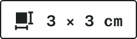
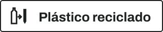
Varilla agujereada
Un módulo de 96 × 40 que se repite: una varilla, un hilo pasando por la perforación. Archivos en assets/sistema: el módulo suelto y el pattern armado de 1080 × 1080, en positivo y negativo.
Pedí tu presupuesto
Stand Recuvarilla
Flecha: la varilla acostada; la punta indica hacia dónde. Es la única pieza donde la varilla puede girar.
$ 2.950
+ IVA, por unidad
Lista 01/08/2026
Precio: A5 parado. Precio en Chivo Mono, grande; la fecha, siempre.
Pedí tu presupuesto
WhatsApp 11 2395-8302QR: tótem grafito, a la altura del pecho.
Alambrados
Agujereada a la altura de cada hilo.
Aplicación: una por cartel, con su ícono y su esquema.
Con las varillas reales: los carteles de aplicación van al lado de un tramo de alambrado armado con varillas de verdad. El cartel explica, la varilla convence.
Alturas: flechas a 2 m, carteles de precio sobre el mostrador, QR entre 1,2 y 1,5 m.
Lectura: el titular de un cartel mide al menos 1/10 de su alto. Si no se lee a 3 m, tiene demasiado texto.
| Tipo | Para qué | Ejemplo de titular | Mezcla | Plantilla | |
|---|---|---|---|---|---|
| Producto | Qué es y cómo se pide | 3 × 3 × 120 cm. | 25% | producto.html | |
| Aplicaciones | Para qué sirve, con fotos reales | Alambrados perimetrales. | 25% | aplicaciones.html | |
| Pruebas | Reseñas y casos reales | "Gran calidad en las varillas de 1,20." | 15% | pruebas.html | |
| Proceso | Cómo se fabrica, paso a paso | Pasa por el molde. | 15% | proceso.html | |
| Educación | Plástico reciclado y el campo | ¿Por qué no se pudre? | 10% | educacion.html | |
| Marca | Quiénes somos, de dónde | Hecha para el campo. Pensada para durar. | 10% | marca.html |
Cada plantilla sale en cuadrado y en historia. Se editan los textos marcados EDITÁ y se exportan con herramientas/render-plantillas.sh. No publiques dos posteos oscuros seguidos.
Si sobra lugar, no se rellena: el aire también es parte de la marca.
La misma grilla en un posteo real. Vale igual para el folleto, la lista de precios y el cartel.
Atado: dos fajines con la franja, como los zunchos celestes que ya usan los pallets, y la etiqueta al medio.
Varilla 3 × 3 × 120 cm
Etiqueta del atado: 100 × 60 mm, se completa a mano. Imprimible en la impresora de la oficina.
Hecha en Luján con plástico recuperado
Stickers: redondo con el isotipo (5 cm) para la varilla y los atados; rectangular para camionetas, cajas y la mercadería de los distribuidores.
En packaging manda la franja: es la marca de origen que se ve de lejos en el galpón.
En el local del distribuidor, el distribuidor manda. Recuvarilla aparece con su sello y su producto, sin competir.
Varillas de plástico recuperado.
Pedilas acá, en el mostrador.
Ya llegaron las varillas.
El recuadro punteado es el lugar del logo del distribuidor: se reemplaza por su archivo.
| Movimiento | Cómo |
|---|---|
| Logo | 1,8 s. La varilla cae y se clava con peso, sin rebote. Tres perforaciones de 90 ms. Las franjas crecen desde el centro. |
| Intro de reel | El logo animado y la frase. Máximo 2 s. |
| Outro de reel | Logo quieto, WhatsApp y QR, 2 s. |
| Transiciones | Corte seco, o la varilla que cruza la pantalla de izquierda a derecha y barre (400 ms). |
| Texto | Línea por línea, subiendo apenas; 250 ms cada una, 120 ms entre líneas. |
| Curva | Entradas con ease-out, salidas con ease-in. Nada gira, nada rebota. |
Referencia: el scroll 3D de la web, donde la varilla se fabrica y termina clavada en el alambrado. El movimiento siempre cuenta algo del producto. Con "reducir movimiento" activado, el logo aparece quieto.
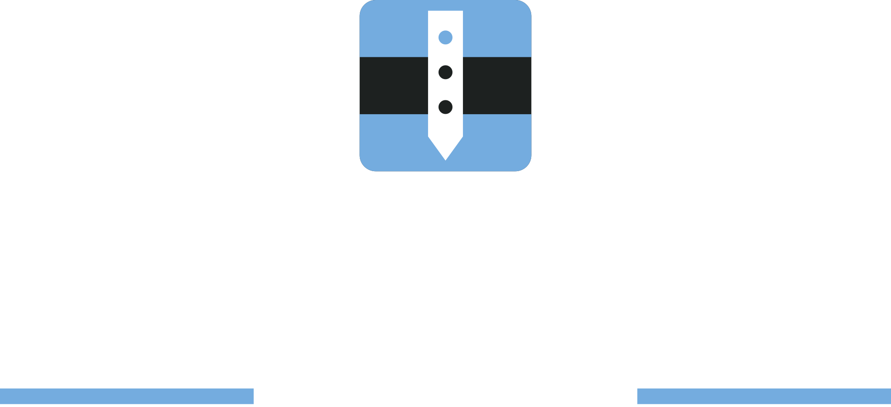
Hecha para el campo.
Pensada para durar.
Design system digital. Botones, tarjetas, campos, espaciado, radios y estados para la web y el ERP, derivados de este manual.
Arquitectura de marca. Cómo se nombran y se muestran productos nuevos, como el alambre, al lado de la varilla.
ContactoWhatsApp 11 2395-8302
recuvarilla@gmail.com
@recuvarilla · recuvarilla.com.ar
Luján, Buenos Aires
Este manual se actualiza cuando cambia algo. Anotá la versión y la fecha en la portada.